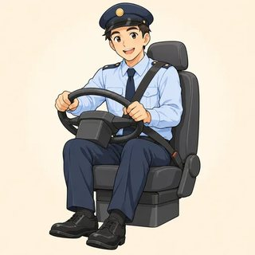

Confident English (B2) · Instructor Kit
Module 6
Words & Questions
The right form. The right size. The right shape.
Classes C17–C19 · the map
Precision in three steps
- 6.1 Word families: decide → decision → decisive → decisively → indecisive
- 6.2 How big is the difference? far cheaper · slightly heavier · nowhere near as good · the more…, the better
- 6.3 Asking skillfully: Could you tell me where the station is? · Isn't it beautiful? · Who broke it?
NOTE Your real life, a new identity card, or something invented: all are OK. You can say "Pass."
6.1 · Word families · one word becomes four
un + success + ful + ly = unsuccessfully
| Base | Noun | Verb | Adjective | Adverb |
|---|---|---|---|---|
| decide | decision | decide | decisive | decisively |
| success | success | succeed | successful | successfully |
| strength | strength | strengthen | strong | strongly |
| create | creation · creativity | create | creative | creatively |
"She made a quick decision. She's decisive. She acted decisively." Same idea? (Yes.) What changed? (Only the job: noun, adjective, adverb.)
6.1 · Suffixes · the ending tells you the job
What job is the word doing?
| Noun | -tion · -ment · -ness · -ity · -er / -or | education · agreement · kindness · ability |
|---|---|---|
| Adjective | -ful · -less · -able · -ive · -ous · -al | careful · careless · reliable · creative |
| Adverb | -ly | quickly · carefully (two l's) |
| Verb | -ize · -en · -ify | modernize · strengthen · simplify |
PHOtographbase
phoTOgraphy-y after -graph
photoGRAPHic-ic pulls the stress
SAY IT -tion · -ic · -ity → stress the syllable just before · eCOnomy → ecoNOmic · creAtive → creaTIvity
6.1 · Prefixes · meaning, not job
Flip it or shade it
| Negative | Example |
|---|---|
| un- · in- | unfair · incorrect |
| im- (m, p) | impossible · impatient |
| il- (l) | illegal · illogical |
| ir- (r) | irregular · irresponsible |
| dis- · non- | dishonest · non-smoker |
| Other | Example |
|---|---|
| re- again | rewrite · rebuild |
| over- too much | overcook · overwork |
| under- too little | undercooked · underpaid |
| mis- wrongly | misunderstand · misspell |
| pre- before | preview · prehistoric |
WATCH invaluable = VERY valuable! · flammable = inflammable · unpossible ❌ · beautiless ❌
6.1 · Pairs, then teams · 11 + 11 min
🧩 Word Family Grid · 🏁 Prefix/Suffix Race
- Grid: ask and spell. "What's the adjective from rely?" "Reliable: R-E-L-I…"
- Agree on the negative together
- Race 1 Flip it · 2 Build it (real words only!) · 3 Fit it
Show your card? (No.)
After you say the word…? (Spell it.)
Invented words in the Race? (Minus one!)
Round 3: what do you write? (The form that fits.)
After you say the word…? (Spell it.)
Invented words in the Race? (Minus one!)
Round 3: what do you write? (The form that fits.)
6.1 · Choose the form · then tell a story · 12 min
What job does the slot need?
| It was a huge ___ . (SUCCESS) | after a huge → noun | success |
| It was a ___ launch. | before a noun → adjective | successful |
| They finished it ___ . | how? → adverb | successfully |
| The first try was ___ . | it failed → negative | unsuccessful |
🗣️ Comeback Story: something went wrong, then went right. Six forms or more. Listeners mark the bingo. "Bingo" after the story! Real, a card, or imagined.
6.2 · How big is the difference?
Not just "cheaper": how much cheaper?
| Big | far · much · a lot · considerably · significantly + comparative | far more powerful |
|---|---|---|
| Small | slightly · a bit · a little · marginally + comparative | slightly heavier |
| Much less | not nearly as · nowhere near as … as | nowhere near as good as |
| Almost | not quite as … as | not quite as fast as |
Nova S $320 · Kestrel 8 $640. "Much more expensive?" (Yes: twice as expensive.) Battery 48 h vs 46 h: "far better"? (No, slightly.)
WATCH very cheaper ❌ → much cheaper ✔ · more better ❌ · very expensive ✔ (no comparative)
6.2 · as… as · multiples · than or as?
Equal, less, twice as…
| She's as tall as her brother. | equal |
| The sequel isn't as exciting as the original. | less |
| The Kestrel is twice as expensive as the Nova. | × 2 |
| Rent in Riverton is almost twice as high as in Millbrook. | ≈ × 2 |
| The trip took half as long as we expected. | × ½ |
| Your phone is the same as mine. · similar to · different from | same |
RULE -er / more / less → than · as / the same → as · weak: as /əz/ · than /ðən/
6.2 · Two changes together · trends
The more you practice, the better you get
| The + comparative… ↗ | the + comparative ↘ |
|---|---|
| The earlier we leave, | the less traffic we'll hit. |
| The bigger the car, | the more gas it uses. |
| The sooner, | the better! |
Trends: Her English is getting better and better. · Rent is getting more and more expensive.
🔗 Consequence Chain: "The more you practice, the better you get." → "The better you get, the more…"
🔗 Consequence Chain: "The more you practice, the better you get." → "The better you get, the more…"
WATCH More you try, better it gets ❌ — two "the"s!
6.2 · Model · weighing two options
"The highway or the coast road?"
A: Which route do you recommend?
B: The highway is far quicker, but it's nowhere near as pretty. The coast road is twice as long, though.
A: Hmm. The earlier we leave, the less traffic we'll hit, right?
B: Exactly. And it gets more and more beautiful the farther south you go. It's slightly slower, but worth it.
A: OK. The earlier we set off, the better!
6.2 · Pairs · 18 min · don't show your sheet!
⚖️ Compare & Recommend

Nova S vs Kestrel 8

delivery driver

warehouse lead

Riverton vs Millbrook
Show your sheet? (No, tell your partner.) · How many structures? (Six: tick them.) · The client card? (Who we recommend for.) · Last words? ("So overall, I'd recommend… because…") · Our own salaries? (No, only the card.)
6.3 · Direct → indirect · the sandwich
Could you tell me where the station is?
| Direct | Indirect: opener + statement order |
|---|---|
| Where is the station? | Could you tell me where the station is? |
| What time does it open? | Do you know what time it opens? |
| How much did it cost? | Could you tell me how much it cost? |
Openers: Do you know…? · Could you tell me…? · Do you have any idea…? · Would you mind telling me…? · I was wondering if… · I'd like to know…
WATCH …where is the station? ❌ · …what time does it open? ❌
6.3 · Yes/No → if / whether · sound polite
No question word? Add if or whether
| Are they open on Sundays? | Do you know if they're open on Sundays? |
| Does the bus stop here? | Could you tell me whether the bus stops here? |
| Has the train left? | Do you know if the train has left? |
| …or not | whether or not they're open · if they're open or not |
SAY IT start high · use your whole voice · Could you tell me where the STAtion is? ↗ · I was wondering if you had any OPEnings ↘↗
6.3 · Negative questions · what they really mean
Isn't it…? · Didn't you…? · Don't you think…?
| Isn't it beautiful? ↘ | I think so: agree with me! |
| Didn't you get my message? ↗ | I'm surprised |
| Isn't the office closed on Mondays? ↗ | I think so: let me check |
| Don't you think we should wait? ↘ | a suggestion: I want to wait |
"Didn't you get my message?" You got it. (Yes, I did.) You didn't. (No, I didn't.) · Yes = it's true / it happened.
6.3 · Subject questions · the office mystery
Is the question word the doer?
| Doer → no auxiliary |
|---|
| Who ate the cake? |
| Who left the fridge open? |
| What happened at twelve? |
| Not the doer → do / does / did |
|---|
| What did the team buy? |
| Who did Ms. Tran call? |
| What did she find? |
TEST Leo opened it → Who opened it? · She bought a cake → What did she buy? · Who did break it? ❌
6.3 · Groups of 3 · 22 min · rotate roles
🛎️ Polite Enquiry: front desk & job interview
- A customer / candidate: 6 indirect questions + 1 negative question
- B staff / interviewer: answers + one "Don't you think…?"
- C observer: checklist → one great thing, one thing to fix
- Interview: the candidate uses an identity card
How many indirect questions? (Six+.)
does / did after the opener? (Gone!)
Yes/no question? (if / whether)
Observer says…? (One great thing, one to fix.)
Your real life in the interview? (No, the card.)
does / did after the opener? (Gone!)
Yes/no question? (if / whether)
Observer says…? (One great thing, one to fix.)
Your real life in the interview? (No, the card.)
The right form · the right size · the right shape
Module 6 done 🎉
- 🧩 decide → decision → decisive → decisively → indecisive · phoTOgraphy
- ⚖️ far cheaper · slightly heavier · nowhere near as good · twice as big · the more…, the better
- ❔ Could you tell me where it is? · Isn't it…? ↘ · Didn't you…? ↗ · Who broke it?
Homework: online lessons 6.1–6.3 with 🔊. Next: Module 7, put off or postpone? Register.